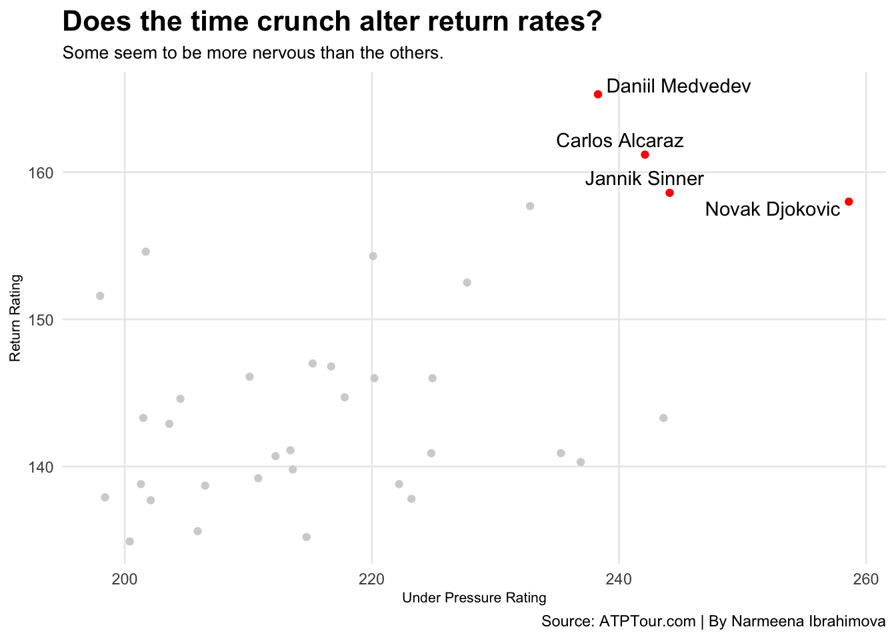
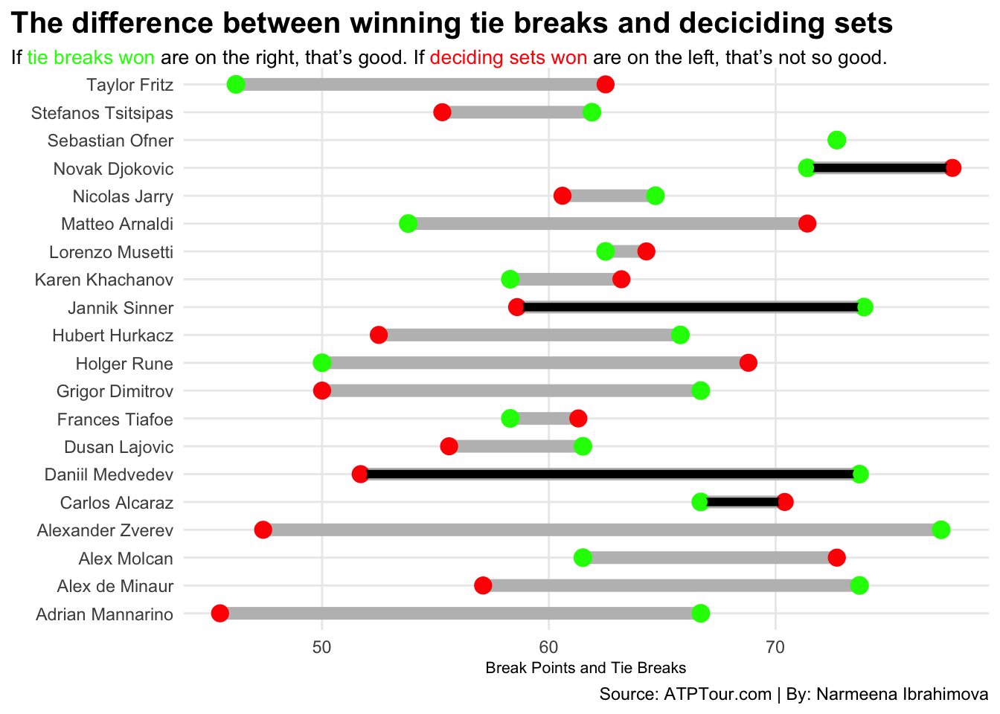

Right now it’s Djokovic vs. just about everyone else.
But there are three stars right behind him. In fact, they’re so close to passing him in stats but they struggle in one aspect. Daniil Medvedev, Jannik Sinner, and Carlos Alcaraz all seem to be the best competition for Djokovic right now.
But is that heir out there?
First, let’s take a look at how they perform under pressure.
Code
library(tidyverse)library(ggrepel)library(gt)library(ggalt)library(ggtext)pressure <-read_csv("pressure.csv")return <-read_csv("return.csv")serve <-read_csv("serve.csv")combined <- return |>inner_join(pressure)four <- combined |>filter(Player =="Novak Djokovic"| Player =="Daniil Medvedev"| Player =="Jannik Sinner"| Player =="Carlos Alcaraz")ggplot() +geom_point(data=combined, aes(x=`Under Pressure Rating`, y=`Return Rating`), color="lightgrey") +geom_point(data=four, aes(x=`Under Pressure Rating`, y=`Return Rating`), color="red")+geom_text_repel(data=four, aes(x=`Under Pressure Rating`, y=`Return Rating`, label=Player)) +labs(x="Under Pressure Rating", y="Return Rating", title="Does the time crunch alter return rates?", subtitle="Some seem to be more nervous than the others.", caption="Source: ATPTour.com | By Narmeena Ibrahimova") +theme_minimal() +theme(plot.title =element_text(size =16, face ="bold"),axis.title =element_text(size =8), plot.subtitle =element_text(size=10), panel.grid.minor =element_blank() )

Visually, it’s apparent that all four of the men have pretty good return rates under pressure. But there are three significantly better at returning serves than Djokovic.
But is that enough?
Winning tie breaks and winning deciding sets are ultimate points to win in tennis.
Code
top20 <- pressure |>top_n(20, wt=`Under Pressure Rating`)four <- top20 |>filter(Player =="Novak Djokovic"| Player =="Daniil Medvedev"| Player =="Jannik Sinner"| Player =="Carlos Alcaraz")ggplot() +geom_dumbbell(data=top20, aes(y=Player, x=`Tie Breaks Won`, xend=`Deciding Sets Won`),size =3,colour ="grey",colour_x ="red",colour_xend ="green") +geom_dumbbell(data=four, aes(y=Player, x=`Tie Breaks Won`, xend=`Deciding Sets Won`),size =2,colour ="black",colour_x ="red",colour_xend ="green") +labs(x="Break Points and Tie Breaks",y="",title="The difference between winning tie breaks and deciciding sets", subtitle ="If <span style = 'color:green;'>tie breaks won</span> are on the right, that's good. If <span style = 'color:red;'>deciding sets won</span> are on the left, that's not so good.",caption ="Source: ATPTour.com | By: Narmeena Ibrahimova" ) +theme_minimal() +theme(plot.title =element_text(size =15, face ="bold"),axis.title =element_text(size =8), plot.subtitle =element_textbox_simple(size=10), panel.grid.minor =element_blank(),plot.title.position ="plot" )

Ultimately, Medvedev, Sinner, and Alcaraz all seem to be the top competition for Djokovic. In fact, looking at their statistics, all of them are pretty close until you get to their serves. The gap gets exposed between them.
Code
top20 <- serve |>top_n(20, wt=`Serve Rating`)four <- top20 |>filter(Player =="Novak Djokovic"| Player =="Daniil Medvedev"| Player =="Jannik Sinner"| Player =="Carlos Alcaraz")top20 |>top_n(20, wt=`Serve Rating`) |>select(Player, `Serve Rating`) |>gt() %>%tab_header(title ="The only thing keeping them behind Djokovic: Serving.",subtitle ="These three need to up their serve game.", ) %>%tab_style(style =cell_text(color ="black", weight ="bold", align ="left"),locations =cells_title("title") ) %>%tab_style(style =cell_text(color ="black", align ="left"),locations =cells_title("subtitle") ) %>%tab_source_note(source_note =md("**By:** Narmeena Ibrahimova | **Source:** ATPTour.com") ) %>%tab_style(style =list(cell_fill(color ="lightblue"),cell_text(color ="black") ),locations =cells_body(rows = Player =="Novak Djokovic") ) %>%tab_style(style =list(cell_fill(color ="lightblue"),cell_text(color ="black") ),locations =cells_body(rows = Player =="Jannik Sinner") ) %>%tab_style(style =list(cell_fill(color ="lightblue"),cell_text(color ="black") ),locations =cells_body(rows = Player =="Daniil Medvedev") ) %>%tab_style(style =list(cell_fill(color ="lightblue"),cell_text(color ="black") ),locations =cells_body(rows = Player =="Carlos Alcaraz") )
The only thing keeping them behind Djokovic: Serving.
These three need to up their serve game.
Player
Serve Rating
Hubert Hurkacz
295.5
Stefanos Tsitsipas
291.3
Nicolas Jarry
290.6
Novak Djokovic
290.6
Christopher Eubanks
289.7
Quentin Halys
288.5
Taylor Fritz
287.6
Thanasi Kokkinakis
287.6
Jannik Sinner
284.3
Alexander Zverev
283.8
Tallon Griekspoor
282.8
Ben Shelton
282.8
Frances Tiafoe
282.3
Carlos Alcaraz
281.4
Sebastian Korda
281.2
Jordan Thompson
280.4
Alexei Popyrin
279.8
Karen Khachanov
279.8
Andrey Rublev
278.3
Daniil Medvedev
277.2
Lorenzo Sonego
277.2
By: Narmeena Ibrahimova | Source: ATPTour.com
```
Djokovic is the fourth best. Sinner is 9th, Alcaraz 14th and Medvedev 20th.
Getting on the court and hitting serves for eight hours a day may be the most beneficial thing for these three men if they want to take Djokovic’s No.1 spot.
Overall, it’s apparent these three are the best competition in the game for Djokovic, but they need to get their serve game in check if they want to be claimed the best of men’s tennis.